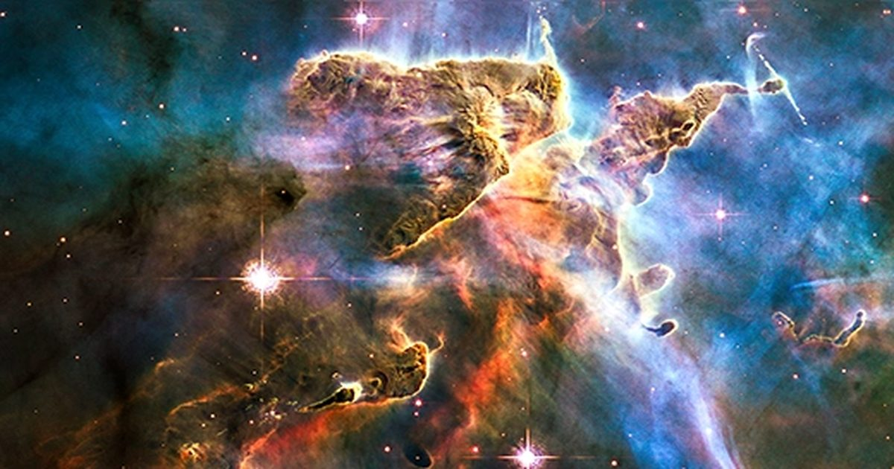

Новая карта «пустого» космоса бросает вызов спокойной картине Галактики
На протяжении десятилетий астрономы рассматривали межзвездную среду как статический фон для происходящего во Вселенной.
Теперь волна 3D-картирования привлекает внимание к динамической природе межзвездной среды.
The post Новая карта «пустого» космоса бросает вызов спокойной картине галактики first appeared on Quanta Magazine